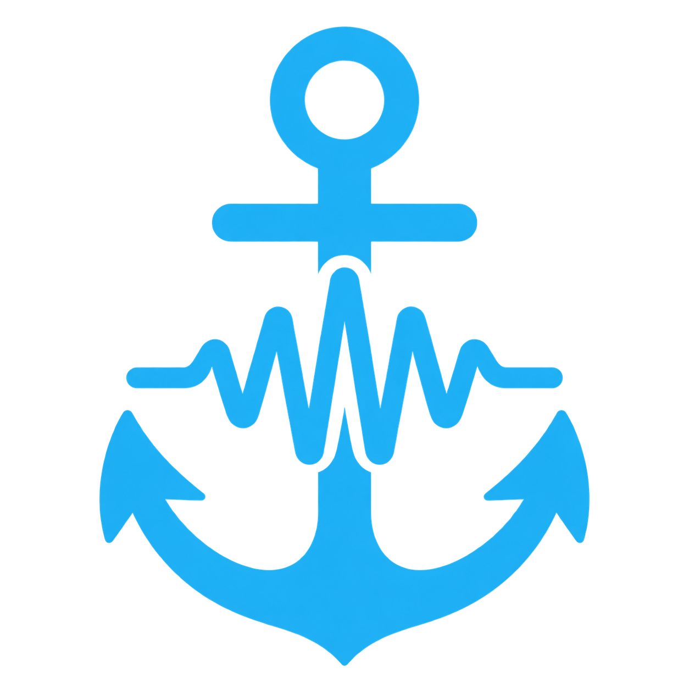
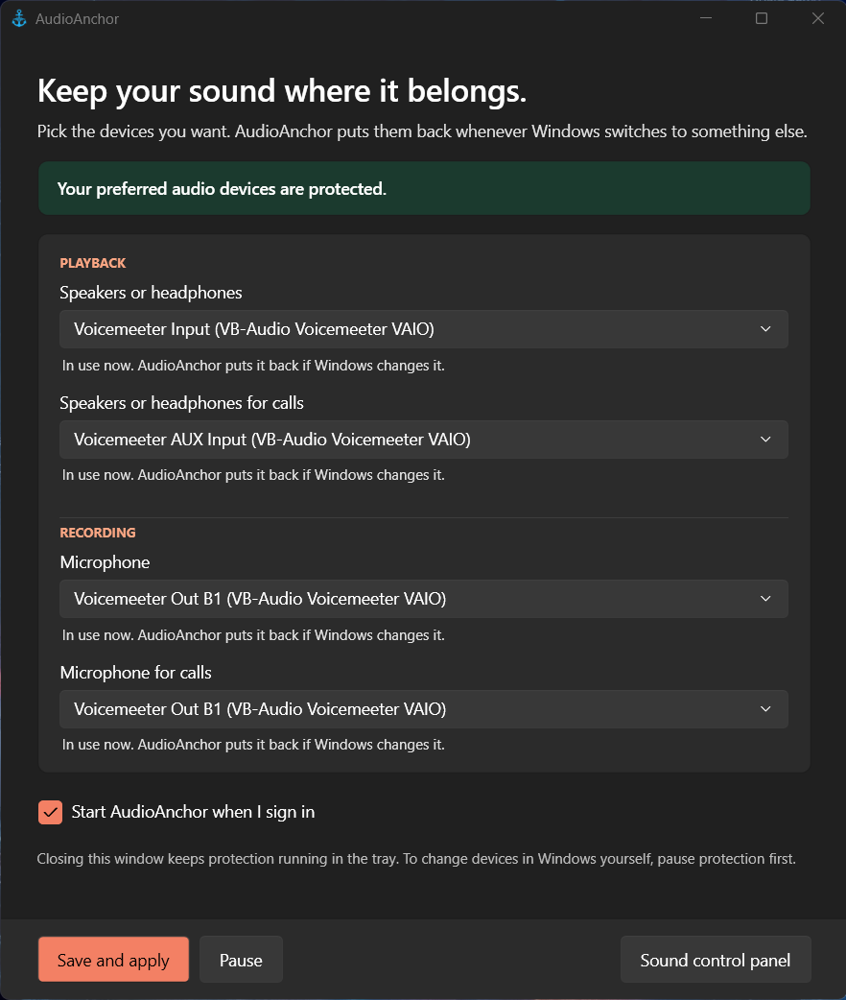
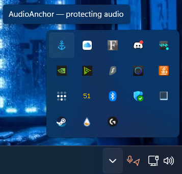

AudioAnchorTired of Windows switching your speakers or microphone every time something gets plugged in? AudioAnchor is a free, lightweight Windows tray app that puts your preferred playback and recording devices back the moment Windows changes them.
Windows 11 x64

The settings window

Runs quietly in the tray
Choose your speakers, headset, and microphones. AudioAnchor restores them the instant Windows tries to switch to something else, so plugging in a monitor, a dock, or a random USB device won't hijack your audio again.
Unplug your preferred device and Windows can use a temporary replacement. AudioAnchor remembers your choice and switches straight back the moment it reconnects.
No account, no telemetry, no background service beyond a small tray app. Free for any noncommercial use under the PolyForm Noncommercial License.
AudioAnchor is free and always will be. If it's saved you from fighting with Windows audio settings, a coffee is always appreciated, but never expected.
☕ Buy me a coffee